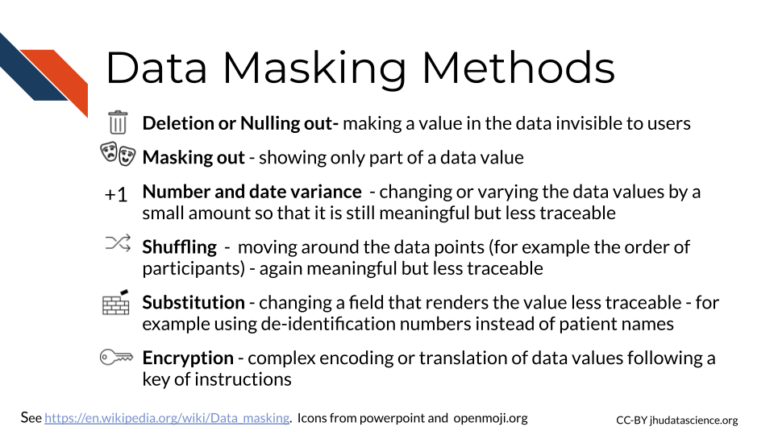

Chapter 3 Data Security
In this chapter we will discuss best practices for keeping your data safe and secure.

Data security involves protecting your data from human error, as well as from cybercriminals. Precious data needs to be protected from being corrupted (rendered unusable), being deleted, being misused, and being leaked to the public when the data is sensitive or private (as is the case with much of our clinical data)(“What Is Data Security? Data Security Definition and Overview” n.d.).
3.1 Data Security Strategies
There a several major strategies to achieve data security. We will cover the following 4 major categories, in part according to “What Is Data Security? Data Security Definition and Overview” (n.d.).
 Restricted access - minimizing access to only authorized users, 2) Data masking - removing/obscuring/changing values a) De-identification -concealing data that can be used to identify patients b) Data encryption - translating the data mathematically 3) Data erasure - fully deleting all traces of data from shared spaces, 4) Data resiliency - maintaining backups of the data and recovery strategies")
3.2 Data access
3.2.1 Authentication
Authentication is the process of verifying identification. This goes both ways when a user attempts to use a server. Servers will check that a user (client) is who they claim to be and that they are authorized to access the information on the server. The user’s computer (client) will also check that the server is what it claims to be. Typically users will use a user name and password for the server to confirm identity, however your computer often checks a certificate from the server to confirm it’s identity (“Understanding Authentication, Authorization, and Encryption : TechWeb : Boston University” n.d.).
3.2.3 Permissions
If you use the command line, you may have noticed that files are sometimes listed with letters like so:
These letters indicate the users ability to perform tasks for each file called file system permissions.
In unix or unix-like systems, there are three types of users:
- Owner (sometimes called user) - This is the person that created the file by default
- Group users - groups can be created to more easily give the correct permissions for various files for a similar group of users.
- Other users - This is any other user who might come into access with the file
There are generally 3 types of permissions:
- read (r) - the user can read the contents of the file, or the user can just read file names in the case of a directory (or folder)
- write (w) - the user can modify the file, or the user can create or delete files in the case of a directory (or folder)
- execute (x) - the user can execute a file - this allows the operating system to run the file, for example a user could run a script, or the user can search among files in the case of a directory (or folder)

Values for permission follow a standard form:
- The first value indicates information about the file type, if it is a regular file it is often just a
-. This does not indicate any information about permissions. If it is a link to a file located somewhere else it is indicated with anl. - The next 3 values indicate what the owner of the file can do. They are always listed in the order of read, write, and execute permissions.
- The next three values indicate what the group members can do (again with the order listed above).
- the final three values indicate what other users can do (again with the order listed above) (“File-System Permissions” 2021).
Sometimes you will see an @ or + symbol at the end, which indicates that there are additional attributes about the file that you can use a command like ls-al@ filename to get the information, or additional security information about the file, which you can obtain using a command like ls -le filename or getfacl filename. The command that you should use depends on your operating system.
In the above image we see -rwxr-xr-x for one of the files.
The - at the beginning indicates that the file is a regular file, the next 3 values of rwx indicate that the owner has read, write, and execute permissions, the r-x indicates that the group has read and execute permissions but not write, and the last r-x indicate that the other users also have only read and execute permissions.
There are commands to modify file permissions. If you are using a Unix-like system, you can modify permissions with the chmod command, which stands for “change mode” (“Manage File Permissions on Unix-Like Systems” n.d.).
3.2.3.1 The principal of least privilege
The principal of least privilege (PoLP) also called the principal of least authority specifies that users should only have access to the data or resources necessary to complete a task.
If someone does not need access to perform work, they should not be given access. Furthermore, if someone is given access to perform a task and they complete that task, access should then be removed from that person. Additionally, if someone only needs to read a file, then they do not need access to modify the file. In this case a user can have read permissions but not write permissions. Ultimately this type of management leads to the least number of users having access to read or alter protected or sensitive data at a given time (“Least Privilege CISA” n.d.; “Wikipedia: Principle of Least Privilege” 2021).
As an example of this in practice: If a postdoc is working on a project with sensitive data, and the PI does not need to see the raw data to collaborate on the project, then the PI should not have access to the data.
3.2.4 WiFi
Make sure you also only access secure WiFi networks. One way to ensure this is is to avoid using public WiFi networks. If you must use a public WiFi network, consider using a virtual private network (VPN) for added security. Here is an article about different VPN options (Gilbertson 2021).
3.2.5 Passwords
Some people suggest using sentences that are easy for you to remember, you could consider a line of lyrics from song or poem that you like, or maybe a movie. Modify part of it to include symbols and numbers (“Guidelines for Strong Passwords · Information Technology Services · Lafayette College” n.d.).
Don’t share your password and keep it safe!
If you have a Mac, you could consider storing it in your Keychain, alternatively if you have a different type of computer or don’t like the Mac Keychain, consider Dashlane or other password manger services. Luckily both of these options do not come at any extra cost and can be helpful for storing all the passwords we use regularly safely. These are especially good options if your password is difficult for you to remember.

3.2.6 Cached data (maybe need to move - was going to be stale access)
In addition to storing data where you might expect, your computer also sometimes stores your data temporarily using something called a [cache](https://en.wikipedia.org/wiki/Cache_(computing) (“Cache (Computing)” 2022). A cache is basically a small storage of your recent use of data. This allows you to access the data that you have been using more quickly next time you want to do something with it.
This process is used by the computer processor or CPU called a CPU cache, as well as software, which we will call a software cache. If you are working with data stored on your local computer, then a subset of short-term memory will be used for the cache, rather than requiring the user to access the data from where it is typically stored much further away in long-term memory. This is more efficient because it is located closer to processor and thus allows for requests on that data to happen faster (“Memory Caching” n.d.).
This general process is also used for accessing data on servers or websites. For servers, a cache is often stored on the server side, while often for websites, a cache is stored locally on the user’s computer in the long-term memory so that when users access the site again, access will be faster. Web browser caches can store your browsing history, cookies (a unique ID for the website to identify the user), as well as sensitive data.
Although this makes your work faster, caching poses some security risk. They provide additional locations where hackers could access your sensitive data. Furthermore, the data in caches are often not encrypted, making such data more vulnerable. One way to avoid the security risk associated with your cached data, is clearing your caches (“What Is a Cache? UpGuard” n.d.).
In the case of a CPU or software cache, this can be important in case your laptop gets stolen, or if you decide to sell your laptop. The easiest way to clear such a cache is to simply shutdown your computer. If you have taken our computing course, you will learn that data stored in short-term memory (like RAM) requires electricity, and it will disappear when your computer is no longer connected to power (“What Is a Cache? UpGuard” n.d.). Note that it can take a few minutes for such memory to disappear.
See here for instructions on how to clear browser caches. It’s a good idea to clear your browser cache relatively often, and possibly more often if you access sensitive data on your computer regularly.
3.2.7 External drives
There are a few major reasons why external drives, especially flash and USB drives (also called thumb drives) pose a security risk.
- they are small and especially portable and thus easily taken or lost
- often these drives can contain malware that gets installed on your computer when you plug it into your computer
- the memory sometimes fails and gets damaged or corrupted
There are several strategies you can take to avoid these issues, if you must use such a drive Durken (2021):
- never use a drive that you find randomly, ideally only use drives you get from a reputable manufacturer, even drives at conferences could pose a security risk
- use drives that have encryption (either buy drives that already have it, which is recommended or add encryption to your drive)
- disable AutoRun software which allows drives to automatically be opened. See here for how to do this. Note that this is mostly an issue for Windows computers.
- remove the drive when not in use (it improves the life of the drive)
- keep all your software up to date to get important security updates
- editing files directly on the drive can limit the life span of the drive, instead simply copy paste files back and forth from your computer
If you really need to use a drive that is questionable, check out this article for practices to more safely open such a drive.
3.3 Data masking
Encryption is actually just one of the more complex methods of a larger concept called data masking for protecting sensitive data. There are other methods for obscuring parts of the data besides the complexity of encryption, such as the following:

3.3.1 De-identification
Data de-identification is the process of removing any values that could be personally identifiable. In other words, it is the process of obscuring the identity of the individuals who have data values within a data set. Re-identification is the process of determining the identity of such individuals based on data (“De-Identification” 2022). Typically an ID number is assigned to each individual to allow for re-identification.
The key for these ID numbers and the original identifier information should be stored in a safe manner with a limited number of individuals with access. The ID number should not be created by using any identifiable information (for example birthday -15*32 followed by the first digit of Zip code). In some cases people use what is called a cryptographic hash function which is a condensed representation of an individual’s data (including identifiable information) to a standard ID length. Such functions are HIPAA compliant under special circumstances, such as restricted access because they are very difficult to decipher. These hash function IDs have an advantage of allowing for the same individual across different datasets to be tracked (but are not intended for re-identification), which can be helpful for longitudinal studies (“HIPAA Privacy Regulations: Other Requirements Relating to Uses and Disclosures of Protected Health Information: Re-Identification - § 164.514(c)” n.d.). See here for additional information about HIPAA de-identification regulations.
While somewhat useful for protecting the identity of those included in data, de-identification is not necessarily robust to newer re-identification methods. Thus other security, privacy, and protection methods are necessary.
The HIPAA Privacy Rule specifies two methods or standards for de-identification: Safe Harbor and Expert Determination.
While it is possible to de-identify your data yourself, unless you are an expert, we suggest that you seek out an expert to help you instead. There are nuances regarding privacy that you may miss without ample experience.
3.3.1.1 Safe harbor
This method is the more extreme of the two and results in more loss of data. A list of 18 standard identifiers must be removed from the data. These are the same 18 PHI categories of identifiers that we described in the last chapter, including name, IP addresses, etc (Rights (OCR) 2012). Additional rules are required as well. For example zip codes may remain in the data if they are shortened to the initial 3 digits and meet certain population threshold criteria. Dates can only remain at the year level, with extra protection for individuals over 89 years of age. However other abbreviations, such as name initials are not permitted.
3.3.1.2 Expert Determination
This method attempts to preserve more of the original data, and data is removed based on the risk of re-identification. As the name describes, an expert evaluates the risk for re-identification of the various values within the data including what the risk might be with if the data were to be combined with other data sources. Ultimately data is removed until there is only a very small risk of someone being able to re-identify the individuals with data values among the dataset. The expert records what methods they used an the analysis that they did to determine the risk.
There is no standardized single way to mitigate risk, but again a set of methods. These typically involve slight modifications to the data called perturbation, coding certain values called generalization or removal of data called suppression. These can occur at the feature level, such as all ages, at the individual level, such as removal of one individual, or at the value level, such as one data value for one individual.
An example of perturbation could be the modification of age by up to 5 years. An example of generalization would be that all individuals over a certain age could be given the same age group value. As example of suppression at the feature level, one could remove all names. As example of suppression at the individual level, in some cases there are individuals who are themselves very distinguishable due to some extreme attribute about themselves and may need to be removed due to the uniquely high risk of identification. If there is just one aspect about these individuals, than that value for the individual can be removed instead of removing the individual from the data entirely.
3.3.1.3 Limitations
In some cases removing protected information can result in data loss that could impede research initiatives. However, generally the limitations of de-identification are the risks that they pose for re-identification.
For Expert Determination, there is no specific degree requirement or training to be considered an “expert”, however typically they are individuals with a statistical background. There is also no specific threshold of what constitutes a very small risk. This is determined by the expert. Additionally, there is no required length of time that a determination expires. It is highly suggested that additional evaluations occur over time as the risks change as technology changes and as the uniqueness of the individuals within the dataset evolves. For example if there are much fewer people over a certain age still living in a sparsely populated area, they could become identifiable. There is also no standard single method to assess re-identification risk. Instead there are a set of methods that follow major principles of risk assessment. They are based on the ability to reproduce the data values for the individual, the availability of identifiable data values from other sources, and the uniqueness or distinguishability of the data values. However, whatever methods are used, the expert is required to document this and make it available to the OCR if they request it.
Even safe harbor which is a more stringent method, has privacy limitations. There are other aspects about the data that could be or could become identifiable. For example, if an individual has a very unique occupation (such as state senator) or combination of certain remaining characteristics, they could become identifiable. Another example is if an individual was a very unique clinical case.
3.3.2 Encryption
Encryption is one of the most well-known methods for keeping data safe. It is used as a last method in case unauthorized users can access to data, and it is also used to protect data when transferring it.
The process involves encoding or scrambling the data in a nonrandom format (we call this form of the data encrypted) that given the right instructions, a computer can reformat into the original form in a process called decryption. The instructions called the key are kept safe like a password and depending on the type of encryption, it can require quite a lot of computational power to decrypt the data. This protects the data because if a cybercriminal accesses the data or if the data is somehow made public when it shouldn’t be, it will not be easily interpreted (“What Is Data Encryption?” 2018).
There are different methods for encrypting data. One common method is called asymmetric, which involves two keys, a public key and a private key (“What Is Encryption? Data Encryption Defined” n.d.). This method is also sometimes simply called public key.
Users can get access to the public key to allow them to encrypt the data, while the private key remains private and is used to decrypt the data. This method is also called public-key encryption (“What Is Encryption? Data Encryption Defined” n.d.).
Symmetric cryptography on the other hand uses one key for encryption and decryption. In systems that use this type of encryption, pairs of users will often be given their own key. The advantage of this system is that decryption is a bit faster, the keys are smaller, and it is generally less expensive to implement. If someone gains access to the key, however they can decrypt data or messages, and encrypt data or messages and appear as if they are the person that owns that key. So often the keys themselves are encrypted (“What Is Encryption? Data Encryption Defined” n.d.).
Since symmetric decryption is faster, it is often used for transferring data or for large datasets.Common symmetric algorithms are AES-128, AES-192, and AES-256 (Labs n.d.).
Asymmetric encryption is regarded to be more secure, common algorithms included RSA and DSA, and several PKCS standards (Labs n.d.).
These algorithms involve mathematical operations to encrypt the data. See this video for a simplified explanation and a suggestion for a video series if you want to learn more about how these encryption algorithms work:
3.3.2.1 SSL Socket Layer
This is what the s in https is for. This indicates that data from the server is using a form of encryption and that the website server has a special SSL certificate from a trusted Certificate Authority that verified that the server can be trusted. There is actually a lot happening behind the scenes!
According to “What Is SSL (Secure Sockets Layer)? What Is an SSL Certificate? DigiCert” (n.d.) this involves the following steps:
A web browser (like chrome) connects to a web server (website) that is secured with SSL (it starts with https instead of http). The browser asks the server to identify itself.
The Server sends a copy of the SSL certificate and the public key.
The browser checks the certificate to make sure that it comes from a trusted certificate authority and that the certificate has not expired or been revoked. The browser also checks that the names on the certificate and the website match. It then sends the server an encrypted session key based on the public key.
The server then decrypts the session key using the private key and sends an encrypted acknowledgment to start an encrypted session.
The server and browser can now transmit encrypted data back and forth.
Note that newer versions of this process are called Transport Layer Security (TLS).
3.3.2.2 SSH Secure Shell
SSH is also a process for securely transmitting files from one computer to another using encryption. However, in this case it can be done using a command line interface instead of a browser. SSH also does not involve certificate.
https://sectigostore.com/blog/ssh-vs-ssl-exploring-the-similarities-and-differences/
3.4 Data erasure
It turns out that when you delete a file (even after emptying the trash), it isn’t as “deleted” as you might think. This is because when a file is deleted, the data for that file actually stays on the storage hardware, and it’s simply the computer’s ability to find the data that is hindered. However, there is software that can help people recover data on storage hardware. This can be a great security issue, as sensitive data can remain on people’s hardware when they get a new computer or stop using particular data on a server.
One method to ensure that the deleted data is really eliminated is to physically destroy the hardware that it was stored on. However, this isn’t always necessary, as there are methods using software. This option is great because the hardware can be reused without allowing future users potential access to your data. As you might imagine, this is the preferred method for erasing data on shared computing resources like servers (Tilly Holland 2020). These methods erase the data by overwriting the data with random digital information (“Data Erasure” 2021).
3.5 Data resiliency
If you are working with precious data directly on your laptop, in case something happens to a computer, it’s a good idea to think about storing the data with multiple locations.
The traditional 3-2-1 backup rule recommends that you keep at least three copies of your data, two different copies stored on separate formats and at least one additional copy at an offsite location.(Durken 2021)
For example, you might think about having one copy on your password protected laptop, one encrypted and zipped copy on your password protected external drive at home, and another encrypted copy on your password protected external drive in your office.
However, in the age of cloud computing and servers, this rule needs to be updated a bit. It has been suggested that if you make use of remote computing options, instead the 3 should indicate that there should be 3 additional copies to the original, 2 indicates that there should be copies stored in two different places on a server or two regions in a cloud (where possible), and the 1 indicates that you should have one copy of the data that is closer to where it was originally created just in case something happens with the server or cloud that you are using (Posey 2021).
3.6 Security in workflows
3.7 Data protection tools for healthcare
redcap
3.8 Email security
Email can also pose a risk for our data. This can be due to the security risks of actually emailing our data to a colleague or issues related to having our computer hacked by someone through phishing emails.
3.8.1 Email Encryption
If possible we would suggest that you avoid sharing data through email, and instead share data through other means, such as a shared computing platform, especially if you have data that requires HIPAA compliance and you have identified a platform to work on that is HIPAA compliant. Please see our computing course for more information about this.
However we understand that there are situations where you might need to email data. If your data has any PHI or PII, we suggest that you only send such emails using a secure network and using an encrypted email.
How do you do this?
If you use Outlook, there are options to do so currently under the “Draft” menu, by selecting the “Encrypt” option. Gmail also supports encrypted emails. Be sure to Google how if this course becomes out-of-date.
3.8.2 Phishing
You likely have heard from your IT department at your institute about being careful about phishing. If you are working with PII or PHI, then you need to be extra vigilant. Phishing emails are emails in which someone tries to get you to click on a link or to respond with credential information in order to hack your computer or gain access to sensitive data. Spear phishing occurs when someone poses as an individual, often someone who is more senior at the institution (this is specifically called whaling), to gain information from others (“Phishing” 2022). Criminals are getting more sophisticated in their attempts, making it more difficult to avoid.
Here are some things to look out for:
- Be very weary about emails from unrecognized senders!
You can look up the sender to verify if the person is who you expect. If the email looks suspicious but still potentially real, you could contact the individual on linked-in or elsewhere to verify if the person actually contacted you. If their email does not match their name this is also extra suspicious. For example, if you get an email signed by George and the email is Peter125@network.org, this could very well be a phishing attempt.
- Check the senders email.
Make sure that the email address from the sender looks like what you recognize. If you know the sender and they send you an email with an unusual email address, be careful. You can send them an email to their typical address to verify if it is really them. For example if your boss Karen, sends you an email from kit345@TSU.edu or titan@hotmail.com and typically her email is karenw3@TSU.edu, you should be suspicious.
- Watch out for links.
Avoid clicking on links in emails as much as possible! If you know that your colleague is sending you a link and you see it right away, that is probably trustworthy, but if your admin sends you a link out of the blue, you should be careful. If you must click a link, first make sure that the link looks like what you would expect. Second, send a follow-up communication using another method (phone, slack, different email address), or email a different colleague that you know works with the individual to make sure the individual actually sent the link instead of a hacker. Make sure that you don’t get the phone number or other information to validate if the individual really sent you the email from the suspicious email itself.
An example of these types of phishing methods is if your colleague hasn’t told you that he is sending a Google doc link and you receive an email from him with a link, then do not click it before verifying that the person really intended to send it. Yet another example is if an administrator sends you a link for you to update your password. Typically they will instead have you go to whatever portal you need to go to manually on your own to update your password. Keep in mind that phishing criminals can make the emails look very legitimate!
Here is a real example of a such a phishing email from California State University Northridge:
From: xxxxx, xxxxx< > Date: Tue, May 25, 2021 at 3:01 PM Subject: Action Required | Returning to Campus Guide for Employees Training
Dear Colleague,
Our records show that you have not completed the Returning to Campus Guide for Employees Training. This training is required to ensure CSUN is in compliance with California OSHA law which mandates that all employees be trained on COVID safety. Please complete this important safety training video ASAP. If you are having issues accessing the course, let me know.
Here’s a shortcut to access the training, (Link has been removed) from this link, you’ll select “Northridge” from the drop down and then sign-in with your CSUN credentials. Then select the “Start” button to view the training.
- Be especially careful of links from two similar emails.
Clone phishing is a sophisticated method in which a legitimate email may be maliciously changed and resent to recipients claiming that there was a necessary change. Be especially careful in such situations where you receive nearly duplicate emails with links and reach out to those who sent it to make sure that a repeated email was really from them (“Phishing” 2022).
- Be careful about attachments!
Similar to links, if you receive an email with an attachment that you do not expect you should be careful and not open them unless you verify by other means that the sender really meant to send you an attachment.
- Don’t give your credentials in emails! Be careful giving personal information.
If someone asks for your credentials or personal information, you should be especially concerned. Generally you will not need to share your password with anyone. Typically administrators will have you log in to whatever platform or system you are working in and proceed from there or they will reset your password. If someone asks for your password or username, it is highly likely a phishing attempt, even if it seems like it is coming from a verified source. An example of this type of phishing is if the chair of your department suddenly (out of context) asks you for your personal phone number. Before sending this information, contact the chair by other means to make sure this request is legitimate.
- Watch out for urgent situations.
Often phishers will create a false urgent situation to trick you into clicking a link or giving information.
Here is a real example of a such a phishing email from California State University Northridge:
Hello there!
My name is Sarah.
Your website or a website that your company hosts is infringing on a copyrighted images owned by myself.
Check out this doc with the hyperlinks to my images you utilized at (URL removed) and my previous publication to find the evidence of my copyrights.
Download it now and check this out for yourself:
(URL removed)
I believe you’ve intentionally infringed my rights under 17 U.S.C. Sec. 101 et seq. and could possibly be liable for statutory damage as high as $150,000 as set forth in Section 504 (c)(2) of the Digital millennium copyright act(DMCA) therein.
This message is official notification. I demand the elimination of the infringing materials referenced above. Take note as a service provider, the Dmca demands you, to remove and/or deactivate access to the copyrighted materials upon receipt of this notification letter. If you do not cease the utilization of the previously mentioned copyrighted content a law suit will likely be initiated against you.
I do have a strong belief that utilization of the copyrighted materials referenced above as presumably infringing is not approved by the copyright proprietor, its agent, as well as legislation.
I swear, under penalty of perjury, that the information in this letter is accurate and that I am the copyright proprietor or am certified to act on behalf of the proprietor of an exclusive and legal right that is presumably violated.
Sincerely,
Sarah Olson
07/21/2021
Additionally, be careful logging into websites as well. Make sure that you are indeed at the link you expect - one way to avoid this is to make a bookmark of the sites that you log in to.
See here for recommendations on what to look out for from the HIPAA journal.
{kind=link}